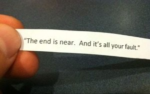

--Alan Watts
“The wife is dear because of the love of the Self.”
--Brahadaranyaka Upanishad
A friend of a friend’s brother, someone I did not know, committed suicide this past weekend. The same day, a not-close-to-me elderly relative of my own also passed away.
Death was on the table for me this weekend.
Of course my heart went out to both families. I cried watching my cousins sob in the zoom funeral.
But I myself was not particularly overwhelmed with sadness or emotion.
Perhaps because there was a lot of relationship-space between me and these folks. I wasn't a part of either life.
And intensity of grief seems to depend on how involved we, the survivors, are in others' lives and situations.
More involved- more intense mourning. Less involved- less intense mourning.
Almost as if, if the self- the me- is not right at the center of things, there’s no great pain.
And almost as if pain and intensity require the self to be center stage.
In fact weirdly, it starts to look like grief is actually more about concern for me the surviving self, than the deceased one.
Because no matter what any death’s circumstances, or how it happens- even when it is someone sick and ready to go-
most survivors find reason to feel loss, guilt, anger, regret, and personal responsibility.
This becomes particularly clear in the case of suicides and accidents, where shock and mourning can be so intense.
Remaining family invariably wonders: Was this my fault? Could I have stopped it? Did I do enough? Did I let them down? How could I have let this happen? Should I have made that phone call, given the warning to drive carefully, taken their keys?
And even when death is not the result of an accident, and involves someone old and sick, still our pain manages to be about ourselves. I am lost. I have lost them. I will miss them. What happens to me now? What will my life be like without them? Where do I go from here? How will I go on?
There's an inevitable wonder about our own death and what we’re in for someday, hopefully long down the road.
Is this what I’m in for? Will my death be like this? Can I avoid it if I do things differently?
So much “I” in all those tears.
Turns out every heartbroken thought is actually about the me.
The death of others is used to verify our own sense of individual self.
We call this mourning the loved one.
When actually it’s about our own loss. We mourn them for our loss, and our identity.
This might get easier to see in those (very) rare times when we can remove the self-based, "But what about me and what I did" concerns.
Because what remains then is often love-filled relief and a far more them-centered celebrating of the one who’s gone.
We may be happy for them, glad they’re not hurting anymore, considerably less sad.
Though of course the mind is capable of turning even fewer tears into some deficiency-meaning about us as an individual.
Non-intensity is seen as a betrayal of the loved one, or a sign we’re forgetting them, or an indication that we don’t care and are unloving and insensitive or somehow broken.
Otherwise we'd be crying, right?
Perhaps we can see that that is still more of the same- just the sense of me, defining and monitoring itself.
As usual.
Luckily for all of us, love is not defined by any particular number of tears.
And not one bit of this is bad or should be different.
This is how it is. This is what humans do. We make everything about us.
So we're still going to experience grief, and sometimes very intensely.
It’s just that maybe we’re grieving something other than we think.
Because humans are self-ish. Grief is self-ish. Bereavement is self-ish. Loss is self-ish.
As in, about the self.
So we may continue to hate the idea that someday these selves and the selves of our loved ones will cease to be.
We may cry about it. We may want to cling, to control, to carry on.
Most likely we will continue to involve ourselves in others' deaths.
Because let's face it- loss of the known, loss of the body, loss of the spark of existence,
whatever that is-
Well, it can seem very scary, mournful, and sad.
So final, so permanent.
Which, if we're lucky, may ultimately bring us around to wondering
if death is indeed
final.
With or without "us."
Click here to watch Judy on Buddha at the Gas Pump
“Why mourn the dead? They are free from bondage.”
--Brahadaranyaka Upanishad
“Grief exists only so long as one considers oneself to be of a definite form. The dead are indeed happy. The dead man does not grieve. The survivors grieve for the man who is dead. Let the man find out his undying Self and die and be immortal and happy.”
--Ramana
"Dancing in ecstasy you go,
my soul of souls.
Don’t go without me.
Laughing with your friends,
you enter the garden.
Don’t go without me.
Don’t let the sky turn without me.
Don’t let the Moon shine without me.
Don’t let the Earth spin without me.
Don’t let the days pass without me.
The two worlds are joyous because of you.
Don’t stay in this world without me.
Don’t go to the next world without me...
Some call you love,
I call you the King of Love.
You are beyond all imaginings,
taking me places I can’t even dream of.
O Ruler of my Heart,
wherever you go…
Don’t go without me.”
--Rumi
